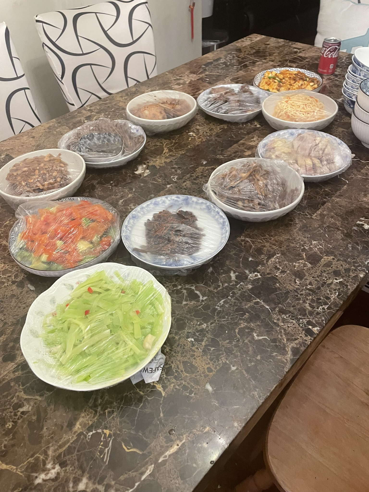

After some flight planning scuff, I agreed with my mom to combine my January and February flights back home into a longer trip over the President's Day weekend. It just so happened to be that this date range also aligned with the Chinese New Year, so I got to celebrate with some family friends. The dinner was actually scheduled on Valentine's Day, a couple days before the actual new year's eve, but who cares?
As the bus to the airport whined and squeaked its way through the run-down streets of LA, I didn't really find myself in a celebratory mood. On my mental to-do list were two unstarted homework assignments, an essay for a movie I barely paid attention to, and a whole coding project that I hadn't the slighest clue about. All that wasn't even including the recruiting hell I was going through.
One short flight later next to someone who didn't seem to know what personal space was, I arrived at SJC. It'd been a whole three or four months since I'd seen my parents in person, but I still felt an unexpected jolt of joy run through me when my mom pulled up.
Opening the trunk to put in my luggage, I noticed a yellow student driver sticker on the back of the car.
Oh gg bro, I think. Your sister really is getting her license before you do...
The drive home was uneventful. The most interesting things I can think of were the billboard switches along the highway. I told my mom about some things going on at school, she told me some things that went on at home, and then we yapped until the car pulled into the driveway.
Every time I come back, there's always something new to get used to. This time there was a bird which I'd been told about during Christmas, but that wasn't even the weirdest thing.
In the corner of the family room, my dad was posted up at his desk watching some Asian TV show. At first I thought it was some live-action Japanese thing, but when I heard the actors speaking I realized it was Chinese. Then, when I looked even closer, I saw it was a historical drama.
"Is this pre-liberation China?" I ask in Shanghainese. He nods in affirmation.
"Wow, just like what grandpa and grandma watch. I swear, every day you're getting more and more like them." I teased.
"Yeah." He doesn't even try to push back.
I didn't even know what to say. Standing there, I noticed more and more of his wrinkles with each passing second.
Since my mom and dad told me they were 42 years old when I was in middle school, my mind's held onto that number irrespective of the flow of time. Even as I moved on to high school and my final years of college, I still thought they were in their forties. The mere thought that they could be anything older was inconceivable.
As the years have flew by, that position has become increasingly untenable. Just a couple months ago my dad had to have some surgery for his back problems. The operation went off without a hitch (thank god), but he still wound up bedbound for a couple of weeks after. It really drove this new reality in for me.
Going through the rest of the house, I saw that our kettle and pitcher had some dark liquid instead of the usual water. Inside the kettle was a mix of apples, goji berries, and jujubees... the same mix I saw my maternal grandfather make himself over winter break in China.
I winced.
The actual dinner was the day after my arrival. This pic below was the only one I actually bothered to take.

The guests, mostly family friends on my mom's side, began arriving sometime around 5:30. The only oher kid was a guy younger than me by a year (yeah, I call other college students kids), so there wasn't any kids' table or anything. All eleven of us just sat at that table in the picture.
All three of the other families brought me red envelopes, even though I'm literally 20 years old and don't deserve stuff like that anymore. I grudgingly accept them and shove them in the corner of a cabinet, trying my hardest to forget their existence.
I think after... high school graduation, my parents actually started giving me my red envelope money instead of just taking it away for "safekeeping". Cash is lowkey not that liquid in this day and age, so they just take the cash and deposit the corresponding amount in me and my sister's bank accounts. I've no clue why they had such a change of heart, but I guess it's more money for me.
My mom took off the covers once the majority had sat down. My friends and I can all tell you that I am certainly not one to appreciate food, so I can't name all the dishes with 100% confidence. I'll try my best, though.
Here's all the dishes I can identify:
Looking at it now, I see that it doesn't really look like much. No one in my family nor any of our guests had a huge appetite though, so this was more than enough. There were also some dishes that weren't on the table yet, like lobster tail and fried rice cakes.
These dishes might not not sound as delicious or exotic, as whatever Amy Tan had her chracters eat in her books, but they were certainly good enough for all of us. With all the food at the ready, everyone wasted no time digging in.
Everyone treated the dinner as a time to catch up on life. I ask the other kid about that hackathon he supposedly won, and everyone asks me about how my school life has been (lowk kinda buns but don't tell em that). And apparently, retirement came to mind a lot during that dinner.
"I've been thinking of retiring in the next couple of years, but it really depends on how the investments go..."
"Yeah- y'know I have a colleague who's certainly old enough to retire, but he still goes to work just to have something to do."
"I know a guy- he actually left NVIDIA literal months before the AI boom, so he was dooming about his stocks in the office the other day."
I look around at the table in silence. Had they all gotten that much older?
:clueless: :clueless: :clueless: :mega_clueless:
I suppose this only makes the time that I can actually spend with them that much more valuable. I'm one of the ones who actually really gets alongs with my parents, so maybe I should be grateful for that instead of dooming over how everyone I look up to at that table is going to be gone. What was that quote again? "Better to have loved and lost, than to have never loved"? I never was the most literate person.
At least unlike the banquets in Tan's novels, no real drama happened here. None of the three descendants present dishonored their family name academically, no messy divorces were mentioned, no token white person that doesn't understand the subtle nuances of Chinese table culture.
The closest thing that I could even call "drama" was when the topic of AI came up at the table. Ever since a short stint with ChatGPT when it first came out, I've been a dedicated AI hater, trying to use it as little as possible. This has always served as a point of contention between me and my parents, who have been dedicated AI users to the point of buying ChatGPT premium (one of our family's stupidest financial decisions in my opinion). They've only started using it more after their companies started spending millions of dollars (according to my dad) shoving it into their workflows.
Apparently, my family friends, most of whom are also in tech, have also been having AI shoved onto them by their companies. All of them talk about how it's been making things easier or whatever, but at this point I've dissassociated enough to the point where I'm basically deaf. I numbly acknowledge whatever they're saying with one "OK" or "I know" after another, not really caring.
This one part aside, the dinner was pretty nice. The food was impeccable (especially the grilled rice cakes), and it was great getting spend time with family after a while.
Overall dinner was around maybe, two hours? After that the table got cleared and we broke up into two groups. The other kids and I started yapping with the one adult who didn't have Chinese as their first language, and the rest of the adults just kept on talking about their adult stuff. I'll be honest, after around the forty minute mark I got tired of socializing and started drifting around the house again.
Happy Chinese New Year, everyone. Gong hey fat choy or whatever they say.